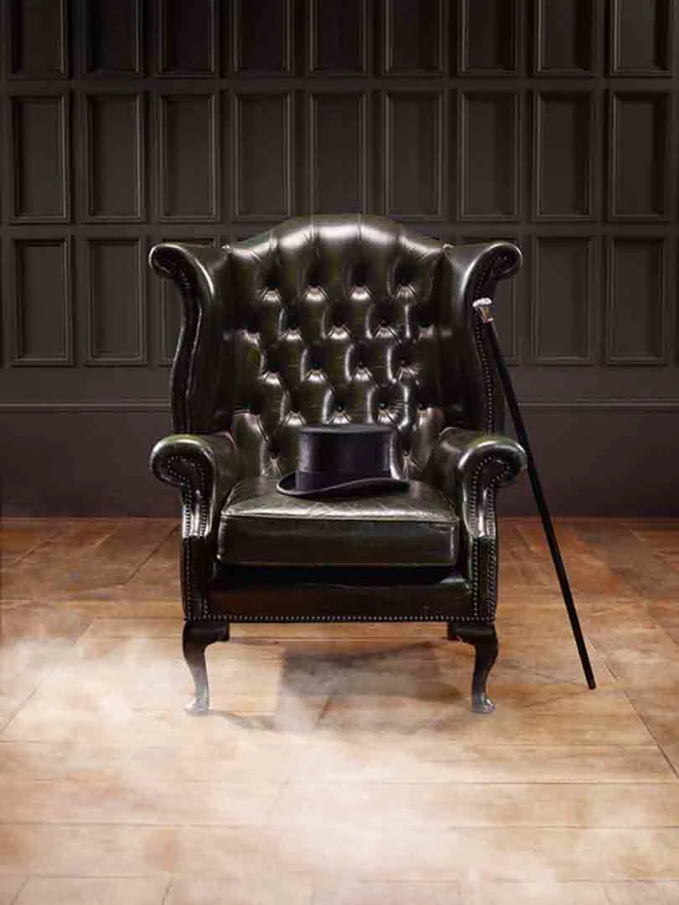

LA HISTORIA DEL WHISKY
Nadie sabe exactamente por cuánto tiempo se ha destilado alcohol, pero la práctica se remonta a por lo menos cuatro mil años atrás.
El año era 1819 y el padre de John Walker acababa de morir. Un comienzo difícil para un humilde joven campesino... eso es lo que pueden estar pensando, pero había algo especial sobre John. Un brillo en sus ojos, fuego en su vientre, andaba seguro de sí mismo.
El mundo en esos días no era el lugar más amigable y John lo sabía. No había tiempo para lamentarse. Había una vida que construir.